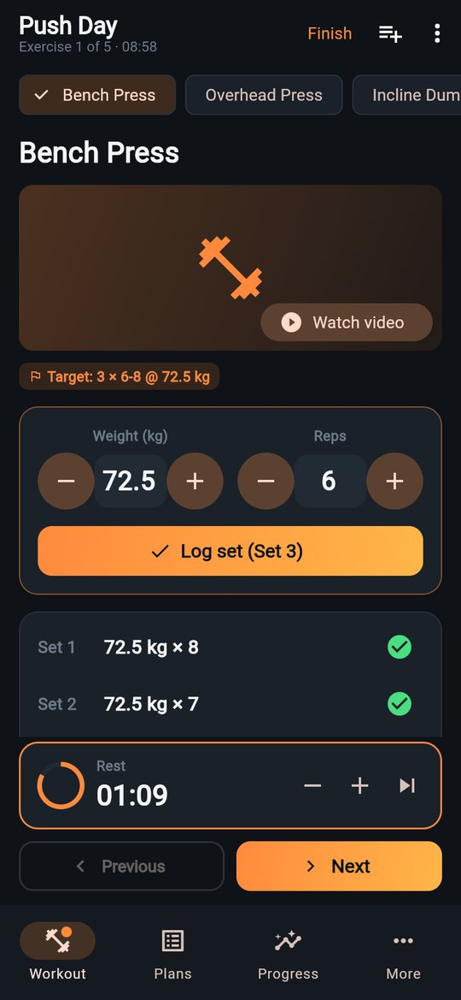
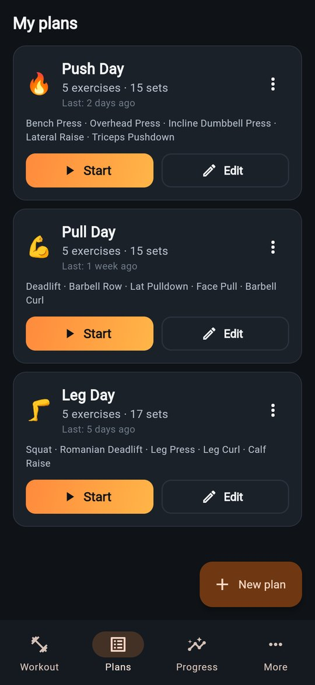
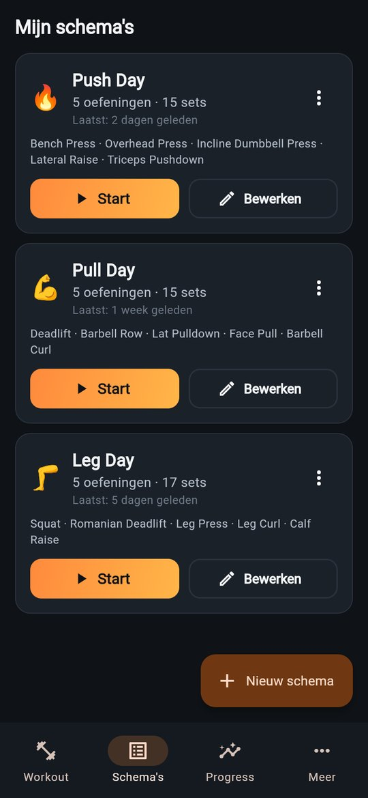
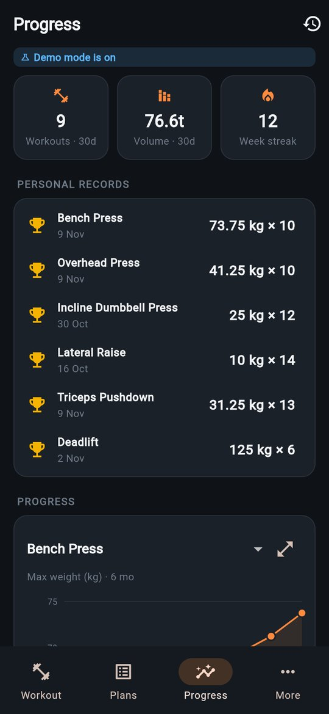
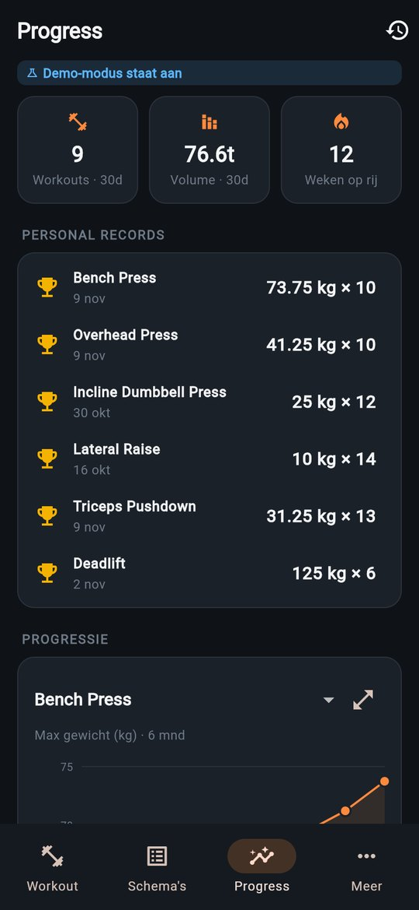
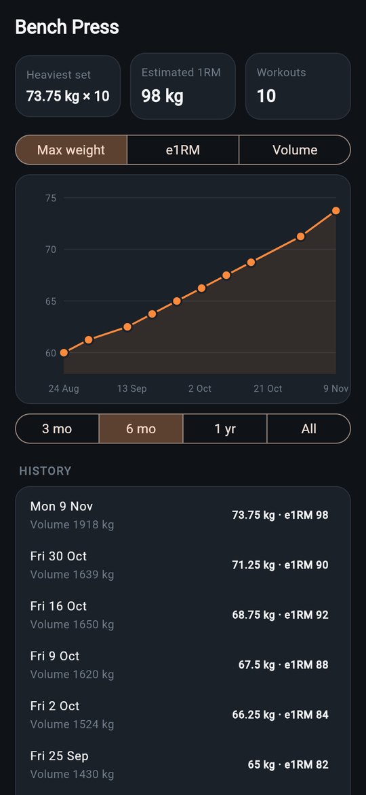
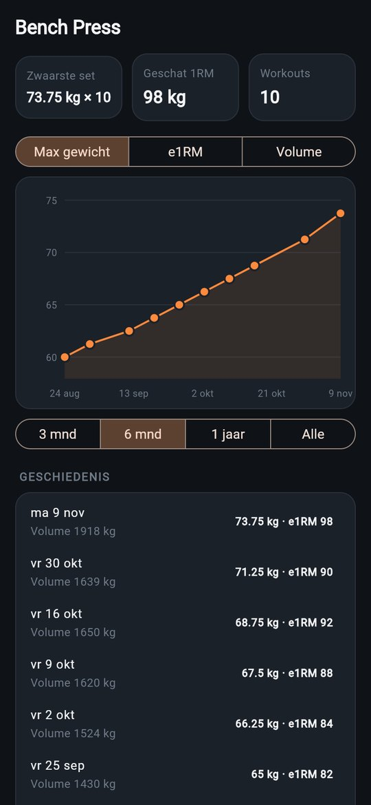
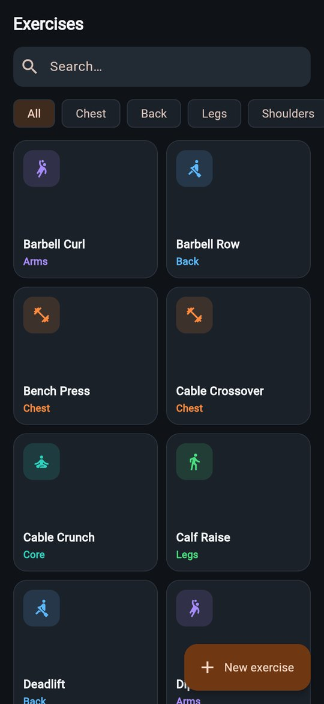
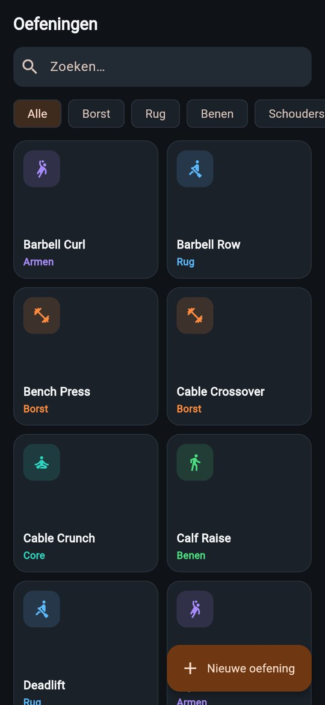

Gym Tracker. Gym Tracker.
Build your workout plans, get guided through every exercise with a rest timer, and see your strength go up. The app remembers what you lifted last time, so you always know what to beat. Maak je trainingsschema's, laat je door elke oefening begeleiden met een rusttimer, en zie je kracht groeien. De app onthoudt wat je de vorige keer tilde, dus je weet altijd wat je moet verbeteren.

What's insideWat zit erin
Train. Log. Improve. Trainen. Loggen. Beter worden.
Fast enough to use between sets, with the stats to show it's working. Snel genoeg om tussen je sets door te gebruiken, met de cijfers die laten zien dat het werkt.
Workout plansTrainingsschema's
Push, pull, legs or your own split. Set sets, reps (like 8-12 or AMRAP), a target weight, rest time and notes per exercise.Push, pull, legs of je eigen indeling. Stel per oefening sets, reps (zoals 8-12 of AMRAP), een streefgewicht, rusttijd en notities in.
Guided workoutsBegeleide workouts
One exercise at a time. Weight and reps are filled in from last time; adjust with big + and − buttons and log the set.Eén oefening tegelijk. Gewicht en reps staan al klaar van de vorige keer; pas aan met grote + en − knoppen en log de set.
Rest timerRusttimer
Starts by itself after every set, with the rest time from your plan. Add or skip 15 seconds; your phone buzzes when it's time.Start vanzelf na elke set, met de rusttijd uit je schema. 15 seconden erbij of eraf; je telefoon trilt als het tijd is.
Personal recordsPersoonlijke records
Heaviest set and estimated one-rep max per exercise. New PRs are highlighted right after your workout.Zwaarste set en geschat 1-rep-max per oefening. Nieuwe PR's zie je direct na je workout.
Progress chartsProgressiegrafieken
Max weight, estimated 1RM or volume per exercise over 3 months to all time, plus volume per week and your muscle-group split.Max gewicht, geschat 1RM of volume per oefening over 3 maanden tot alles, plus volume per week en je verdeling over spiergroepen.
Exercise libraryOefeningenbibliotheek
Over 30 exercises with technique notes and a video link, filtered by muscle group. Add your own, with a GIF if you like.Meer dan 30 oefeningen met techniekuitleg en een videolink, te filteren op spiergroep. Voeg je eigen oefeningen toe, desnoods met een GIF.
Never lose a setNooit een set kwijt
Every set is saved the moment you log it. Close the app mid-workout and pick up where you left off.Elke set wordt opgeslagen zodra je hem logt. Sluit je de app midden in je workout, dan ga je verder waar je was.
kg or lbskg of lbs
Switch units any time; your history converts with it. Light and dark theme, Dutch and English.Wissel op elk moment van eenheid; je geschiedenis rekent mee. Licht en donker thema, Nederlands en Engels.
Your data stays with youJouw data blijft bij jou
No account, no tracking. Everything is stored on your device; export a backup file whenever you want.Geen account, geen tracking. Alles staat op je toestel; exporteer een back-upbestand wanneer je wilt.
See it in actionZie het in actie
Real screens, real progress.Echte schermen, echte progressie.
Screenshots from the app with 12 weeks of demo workouts loaded. Schermafbeeldingen uit de app met 12 weken demo-workouts geladen.








Simple by designSimpel ontworpen
Train in 3 steps.Trainen in 3 stappen.
Make a planMaak een schema
Pick exercises from the library and set sets, reps and rest. Or skip it and start a free workout.Kies oefeningen uit de bibliotheek en stel sets, reps en rust in. Of sla het over en start een vrije workout.
Log every setLog elke set
Check the numbers, tap Log set, rest while the timer runs. Next exercise.Controleer de getallen, tik op Set opslaan, rust terwijl de timer loopt. Volgende oefening.
Watch it growZie het groeien
Finish to see your summary and new PRs. The Progress tab shows the long-term trend.Rond af en zie je samenvatting en nieuwe PR's. Het tabblad Progress toont de trend op lange termijn.
Got questions?Vragen?
Frequently asked questions.Veelgestelde vragen.
Is it free?Is het gratis?
Yes. No subscriptions, no ads, no in-app purchases.Ja. Geen abonnementen, geen reclame, geen in-app aankopen.
Do I need an account?Heb ik een account nodig?
No. Everything is stored on your device (in the web app: in your browser). Export a backup now and then under More → Export data, because your data is gone if you remove the app or clear your browser data.Nee. Alles staat op je toestel (in de web-app: in je browser). Maak af en toe een back-up via Meer → Exporteer data, want je gegevens zijn weg als je de app verwijdert of je browsergegevens wist.
Can I move my data to another device?Kan ik mijn gegevens naar een ander toestel zetten?
Yes. Export on the old device, then Import data on the new one. Importing merges with what's already there; for the same item, the newest version wins.Ja. Exporteer op het oude toestel en kies Importeer data op het nieuwe. Importeren voegt samen met wat er al staat; bij hetzelfde item wint de nieuwste versie.
How do I install the APK?Hoe installeer ik de APK?
Open the download on your Android phone and tap the file. Android asks once to allow installs from your browser; allow it and tap Install. To update, download the new APK and install it over the old one; your workouts are kept.Open de download op je Android-telefoon en tik op het bestand. Android vraagt één keer of je installaties vanuit je browser toestaat; sta dat toe en tik op Installeren. Voor een update download je de nieuwe APK en installeer je die over de oude heen; je workouts blijven bewaard.
Can I use it on iPhone?Werkt het op iPhone?
Yes, in Safari. Add it to your home screen (Share → Add to Home Screen) so it opens like an app.Ja, in Safari. Zet het op je beginscherm (Delen → Zet op beginscherm), dan opent het als een app.
How is the one-rep max estimated?Hoe wordt het 1-rep-max geschat?
With the Epley formula: weight × (1 + reps ÷ 30). It's an estimate, most reliable for sets of up to about 10 reps.Met de formule van Epley: gewicht × (1 + reps ÷ 30). Het is een schatting, het betrouwbaarst bij sets tot ongeveer 10 reps.
Can I try it without logging anything?Kan ik het proberen zonder iets te loggen?
Yes. Turn on Demo mode under More: Progress and History fill with 12 weeks of sample workouts. Your own data is not touched.Ja. Zet Demo-modus aan onder Meer: Progress en Geschiedenis vullen zich met 12 weken voorbeeldworkouts. Je eigen gegevens blijven onaangeroerd.